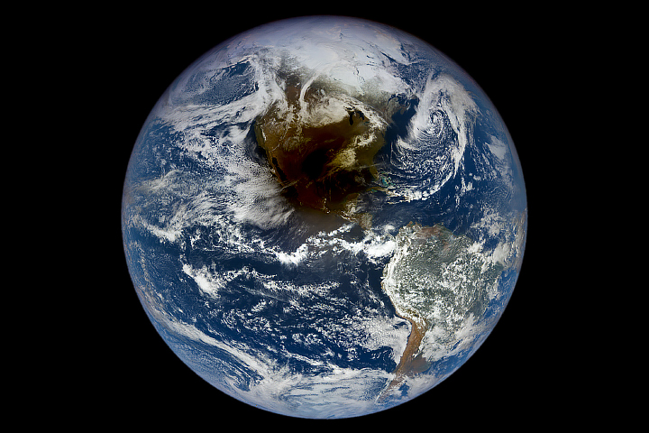
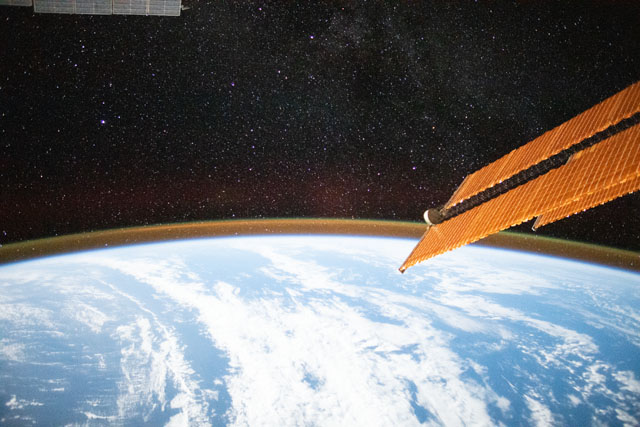
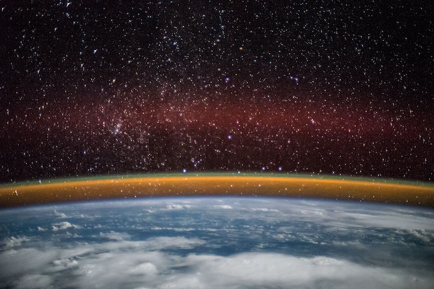
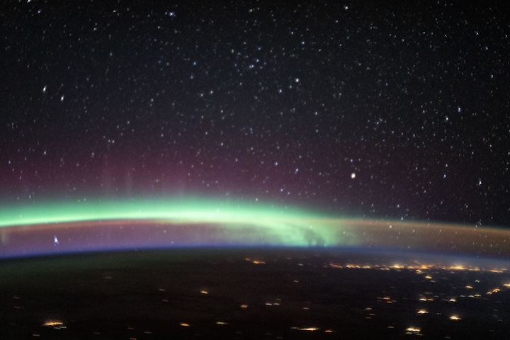
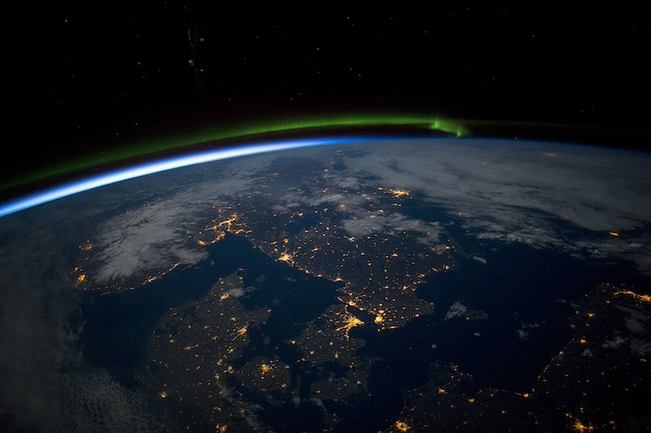
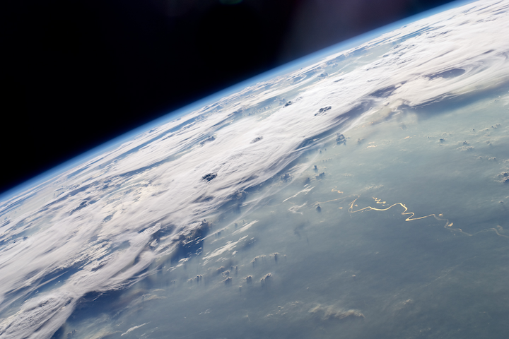

Section 2.1 General overview of Earth’s atmosphere
Before we dig into Earth’s atmosphere’s composition, we will look at some of the big-picture characteristics of Earth’s atmosphere using photographs of Earth and its atmosphere taken from outer space. This discussion will reveal how Earth’s atmosphere is arranged in layers—which we will explore in Chapter 5—and is rather thin compared to the planet.
As we learned in Chapter 1, an atmosphere is a mixture of mainly gases with lesser amounts of small liquid and solid particles that surrounds a celestial body like a planet and is held close to the planet by the planet’s gravitational force. The particular mixture of gases and other particles found in a planet’s atmosphere depends on processes both celestial and terrestrial.
Atmospheres have variable depths, and many atmospheres are much thinner than the planets they surround. This is the case for Earth’s atmosphere: While the planet Earth is about 12,750 km wide, its atmosphere begins to blend with outer space at only 100 km above the planet’s surface! Figure 2.1.1 below shows satellite imagery of Earth on April 8, 2024, the day of the Great North American Eclipse. Clouds within Earth’s atmosphere are visualized as bright white swirls and patches, but because Earth’s atmosphere is so much thinner than the planet, there are no other visual clues in this image that Earth has an atmosphere.

As Figure 2.1.1 illustrates, wide shot photography of Earth will not capture its atmosphere. Instead, satellite images and other photographs taken from outer space of Earth’s limb better visualize Earth’s atmosphere and reveal its thickness and structure. These images view the nighttime side of Earth from an angle that skims Earth’s surface. In such images, the depth of Earth’s atmosphere is made visible by airglow, examples of which are shown in Figure 2.1.2 and Figure 2.1.3 below. In these images, the opaque portion of airglow that hugs the planet appears mainly yellow and terminates in a thin green layer. This lower portion of airglow extends to about 100 km above Earth’s surface, which often is considered the edge of outer space. The thicker, dimmer red and purple portions of airglow extend hundreds of kilometers higher as Earth’s atmosphere blends with outer space. The colors found in airglow are formed as various gases in Earth’s atmosphere undergo chemical and other reactions with sunlight, and their transparency increases at higher heights as the gases thin out.


Because an atmosphere gradually thins out at high altitudes as its planet’s gravitational force weakens with increasing distance from the planet’s center, it is difficult to define the location of the "top" or upper boundary of an atmosphere. Likewise, it is difficult to define the bottom of outer space, which is the near-vacuum beyond a planet’s atmosphere. Instead, atmosphere and outer space blend.
As noted above, Earth’s atmosphere is said to blend with outer space above 100 km. The altitude of 100 km above Earth’s mean sea level (MSL) is called the Kármán line, and so the Kármán line generally is accepted the lower boundary of outer space, or the "edge of outer space." Auroras—the aurora borealis ("northern lights") of the Northern Hemisphere and the aurora australis ("southern lights") of the Southern Hemisphere—are formed mainly above the Kármán line as charged gases high in the atmosphere are excited within this blend of atmosphere and outer space by solar emissions. Both airglow and the aurora borealis are visible in Fig. 4 below.

Earth’s limb appears as a thin blue curve when it is lit from below by the rising or setting Sun, the bright light of which dominates the much dimmer airglow, as shown in Figure 2.1.5 below.

Figure 2.1.6 below shows a photograph of thunderstorm clouds over South America with Earth’s limb in the background to suggest the transition to outer space. Thunderstorms and most other weather phenomena are made visible through sunlight reflected to human eyes by the liquid and solid water particles that form clouds. This photograph shows how most of what we think of as "weather" occurs in only the lowest about 8–20 km of Earth’s atmosphere. Note that the thunderstorms terminate rather abruptly in wide flat cloud sheets, and also note that the thunderstorm clouds are much shallower than Earth’s limb: These characteristics show how this lowest layer that holds our weather is cut off from the rest of Earth’s atmosphere.

Even though we have not yet explored the structure of Earth’s atmosphere in this textbook, Figures 2.1.1–2.1.6 already reveal to us that Earth’s atmosphere has layers: Airglow is arranged in distinctly different layers of color; auroras occur within only some of these layers; and weather phenomena like clouds and thunderstorms are mostly confined to the lowest layer. These figures additionally reveal that gases in Earth’s atmosphere undergo chemical and other reactions with sunlight. We will explore interactions between the particles that make up Earth’s atmosphere and sunlight in Chapter 4, and we will return to the concept of atmospheric layers in Chapter 5. Later, in Chapters 7 and 8, we will look into the formation of clouds—including those that make up thunderstorms—in the lowest part of Earth’s atmosphere.